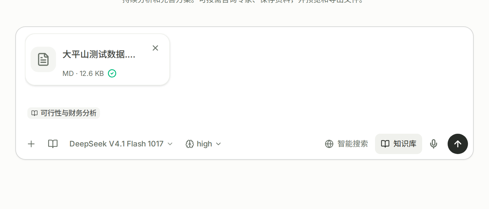
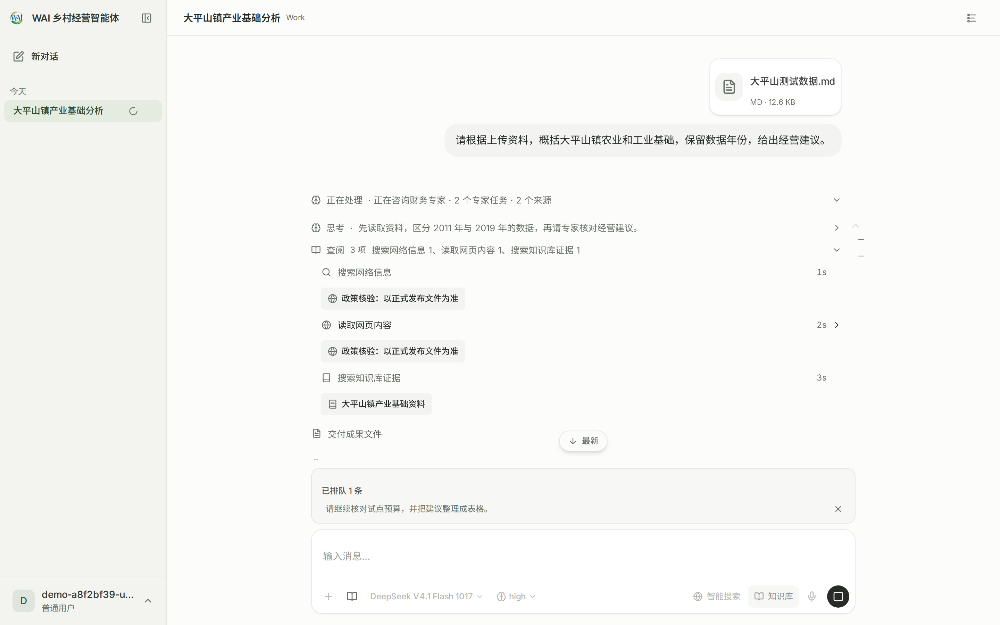

WAI 乡村经营智能体
协助开展工作研究、政策理解、规划编制、方案设计和日常咨询。
一

二

三

四

五

六

七
八个方面的专业分析
乡村经营的一个决定，通常同时涉及这八个方面。系统为每个方面设一类专家，按问题调用相关的几类。
01资源分析与盘点自然、社会、经济、文化、基础设施和数字资源。
02政策分析与机遇识别适用条件、申报路径和合规约束。
03产业战略分析产业方向、市场需求、竞争格局和产业链。
04品牌建设与营销品牌定位、用户画像、渠道和传播。
05项目实施落地实施路线、组织分工、里程碑和运营流程。
06财务分析与资金规划投资估算、成本收益、现金流和融资。
07风险评估与防控政策、市场、经营、自然和合规风险。
08效益评估与决策支持经济、社会、生态、文化和治理效益。
八
更具体、更详细、更有针对性、更可落地
同一个问题，这里的方案按这四点来写。
01更具体写清做什么、谁来做、先后顺序，不停留在方向上。
02更详细条件、金额、年份和来源逐项写出，过程可以展开核对。
03更有针对性围绕你上传的资料和所在地区回答，不套通用模板。
04更可落地给出申报条件、需要先核实的事项和下一步，拿来就能执行。